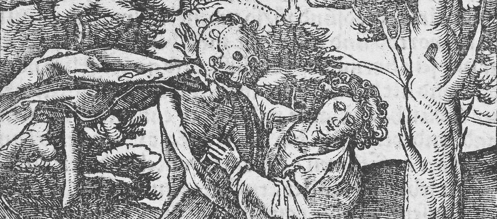

Nous la mangerons, c’est la moindre des choses
Dans ce texte, les termes génériques ont été mis au féminin.

Du sang, fluide, fertile et chaud
Nous la mangerons, c’est la moindre des choses nous plonge dans la quête d’une bergère : abattre elle-même ses bêtes. Le film la suit dans les rites qui lui permettront d’atteindre ce but. Différents travaux mortuaires, autant de facettes que revêt la mort au sein d’un élevage, constituent son initiation. Chacun aura pour conséquence une tuerie, chacun sera l’occasion de se rapprocher de son objectif : apprendre un peu mieux à mettre à mort, un peu mieux à équarrir. Un souhait d’auto-abattage à contre-courant de la législation de l’élevage et de l’imaginaire pastoral. L’enjeu est de sortir la mort de l’abattoir, de ne plus la reléguer à cette intendance autoritaire, à cette industrie déshumanisée. C’est contrecarrer son artifice, cette violence industrielle du massacre sanglant, ce lieu où prend vie la transsubstantiation de l’animal en produit, cette frontière farouchement légiférée à laquelle notre société octroie le droit de fabriquer de la consommation à partir du vivant.
Quelques scènes symboliques ponctuent ce voyage mortifère, comme les degrés de son accomplissement. L’une d’elles, communion chaleureuse, voit la bergère et des convives faire repas d’une bête qu’elle tua et prépara plus tôt. Elle se souvient de celle qui est mangée, donne son nom, parle de sa vie. La scène illustre ce désir d’autonomie, la question contemporaine de la nourriture en manque d’une histoire. Mais aussi, la ré-appropriation de la mort : la prendre en soi comme un pouvoir immanent, l’infuser de sensible et de considération. La bergère revendique la mise à mort avec ses contradictions, ses erreurs et ses forces, là où elle peut devenir l’outil d’une subsistance et d’une indépendance. Si ce pouvoir sur nous reponsabilise, si nous en portons la culpabilité, nous nous pardonnons cet irréparable, alors nous, humaines, pourrons à nouveau considérer l’abattage comme l’une des sources de cohésion de nos communautés.
La caméra est prise dans la mêlée, elle filme de près, dans la sueur des bêtes, des plans comme chauds et fertiles, brusques et brutaux, parfois apeurés. Il n’est pas question du lieu, de l’autour ; le contexte et le décor sont évacués, ils sont inessentiels. Le regard minimaliste fait jeu seul de la relation, des micro-événements, des mots ou des bêlements indistincts. Seuls quelques intertitres portent le point de vue de la bergère et situent sa transformation. Ils nous expliquent sporadiquement le sens des étapes, les raisons de ses actes. Ce choix de confronter la vibration du réel à une narration écrite produit un film à l’apparence biographique, à l’allure de journal intime. Et en même temps, il extirpe la bergère de sa réalité et suggère l’ampleur du mythe. Par là, le film privilégie la passation métempirique sur la transmission d’une subjectivité. C’est-à-dire, la réflexion sur l’expérience produite par le geste est plus intéressante que la personne qui l’exécute. Ce que la bergère génère de ses mains a plus d’importance que ce qu’elle est. Mais, c’est aussi l’une des forces du film : dans les interstices de l’image, il ne nous reste que quelques mots frugaux pour accéder à l’émotion.
Un pas de côté. Dans un abattoir, une employée enseigne à la bergère les bons gestes, comment travailler une carcasse afin d’en faire de la viande. Alors, la curiosité soutenue de la caméra pour les entrailles est inquiétante. Les plans sont froids et lancinants, longs et malaisants, picturaux ; le sang n’y coule pas. Ils façonnent une autre expression, en dehors de la sensibilité bruissante que nous leur trouvions lorsqu’ils faisaient corps avec le bétail. Ce contraste révèle les deux visages de l’initiation : la capacité émotionelle à tuer et la compétence technique d’exploiter. Il évoque aussi la séparation habituelle de l’abattoir : l’espace sale où l’on tue et saigne et l’espace propre où l’on découpe et éviscère. La récurrence de ces plans au cours du film dit l’obsession, la fascination provoquée par l’apprentissage et l’engagement qu’il demande, cette impression sous-jacente que tout événement, même bénin, serait favorable à la bergère pour abattre une de ses bêtes.
Le rite initiatique, l’habitation féminine des rôles, ainsi que la recherche essentialiste du film, interrogent l’abattoir. Il incarne la perspective patriarcale sur la nature, l’exploitation systémique de l’animal. Ce symbole est confronté à la relation écoféministe et sensibilisée à la tuerie, prise dans un processus de réappropriation, de réhabilitation et de réinvention1 : revendiquer donner la mort et donner la vie comme deux pouvoirs coexistants, deux actes qui perpétuent le vivant. De ce fait, l’animal, au lieu d’être un matériau conduit vers un état idéal de collecte par la technique et le savoir, devient un être inséparable de la fertilité naturelle. Il naît d’une mère nature non inerte et non passive, génitrice nourricière et transformative, qui le repositionne au sein du cycle. L’animal et l’humaine sont engagées au même titre dans la coexistence et inclues dans le partage des fluides, des forces et des corps. Cependant, l’armature même de la relation de domination de l’humaine sur l’animal n’est pas ici mise en question, la cohérence de l’élevage ou du droit de gestion du jardin monde reste une vérité inébranlée, qui essouffle les interrogations nécessaires du film et souligne ses contradictions. La bergère fait le choix conscient d’élever et d’abattre ses bêtes, ainsi que de faire de cette activité son métier, bien qu’elle souffre de leur mort. En d’autres termes, tout l’amour qu’elle éprouve pour ses brebis est engendré par son dessein de les tuer.
Sortir la mort de l’invisible, assumer que nos relations avec l’animal puissent être majoritairement déterminées par elle, lui rendre une valeur sensible et spirituelle, c’est accepter une certaine idée de la condition humaine. Et bien que moins hypocrite, toujours aussi dogmatique. Une fois cette capacité à tuer maîtrisée, la bergère dit de la bête qu’elle a mangée : « Je m’en suis occupée jusqu’au bout ».
Dans une scène, une vétérinaire réalise une autopsie sur une bête abattue d’urgence. Par la lecture de ses viscères, elle renseigne la bergère sur la santé du troupeau, elle s’émerveille de la vie qui surgit, des vers, des parasites, des nécrophages. La scène est colorée et foisonnante, la femme empoigne joyeusement des guirlandes organiques, elle provoque des moments de transmission et d’émergence du savoir que cherche la bergère, par lequel elle souhaite se transformer : la mort fait vie.
Romain Gœtz
1 : Le reclaim est un concept majeur des écoféminismes, mais trouve difficilement une traduction satisfaisante en français, tant son amplitude est large. Le principe est de revendiquer, se réapproprier, réhabiliter et réinventer les notions de nature et de féminin, comme bienfaisantes et procurant du pouvoir — empowerment. Nature et féminin furent élaborées comme synonymes par la modernité, l’une justifiant l’oppression et l’exploitation de l’autre, et inversement. Voir Reclaim, Anthologie de textes écoféministes dirigé par Émilie Hache • Cambourakis • Paris • 2016
Image : A Young Man Seized by Death, from Hymmelwagen auff dem, wer wol lebt… • Hans Schäufelein • 1517 • Purchase, Anne and Carl Stern Gift, 1959.